Benoît Magras
Je suis facilitateur de programmes basés sur la Pleine conscience (ESPRIT CLAIR, MBSR, MINDFULNESS SOLIDAIRE) et entrepreneur du changement.
Assistant de service social de formation, j'ai travaillé plusieurs années auprès des demandeurs d’asile et de jeunes en décrochage scolaire.
J'ai réalisé en tant que participant le programme MBSR (Réduction du Stress Basée sur la pleine conscience) en 2015 auprès de Philippe Laourde et me trouve en cours de formation avec l’IMA (Institute Mindfulness Approaches) afin d’instruire ce programme seul ou en co-animation dès 2021.
Je suis également en cours de formation avec l’organisme MINDFULNESS SOLIDAIRE et intervient en co-animation.
J'ai reçu le titre de praticien ESPRIT CLAIR en juin 2020, après la formation dispensée par cet institut, placé sous la direction du Dr Yasmine Liénard.
Je me suis également formé à la méditation de Pleine conscience dans le cadre de retraites et je continue à en faire plusieurs chaque année.
Entre novembre 2016 et février 2018, j'ai vécu un an au Village des Pruniers, un desplus célèbres centres de méditation de Pleine conscience au monde créé par le moine zen vietnamien Thich Nhat Hanh.
Je me suis aussi formé auprès de Dat Phan Angevin, pionnier de la méditation de Pleine conscience en France dans les entreprises.
J'ai notamment participé au développement de la Maison aux Cèdres Bleus (centre de pleine conscience et de mieux être) fondée par Dat Phan Angevin et son épouse, près de Saint Etienne, lorsque j'y résidais.
Auto-entrepreneur dans le domaine de la pleine conscience depuis janvier 2019, j'interviens auprès des particuliers et des collectivités, afin de partager des programmes basés sur la méditation de Pleine conscience laïque notamment dans les secteurs de la santé, de l’éducation et de la justice.
Dans une perspective de veille professionnelle et de bien-être personnel, je pratique quotidiennement le yoga et la méditation. Et je continue de me former à la pleine conscience auprès de l’IMA (Institute Mindfulness Approaches), de l’institut ESPRIT CLAIR, de l’association MINDFULNESS SOLIDAIRE, du programme SEARCH INSIDE YOURSELF avec qui je collabore.
Depuis plus de 10 ans je suis également auteur-compositeur-interprète de chansons françaises. Guitare en bandoulière, je partage mes textes engagés et apaisant, avec authenticité, dans l’espoir d’éveiller, à sa fine pointe, le c(h)œur de l’auditeur.
Ils me font confiance :
 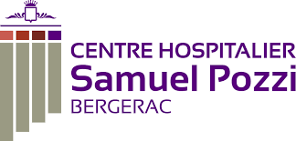
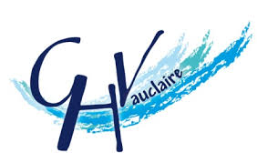
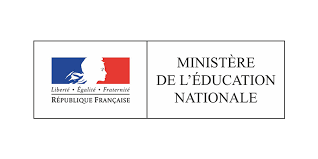
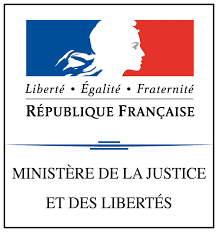
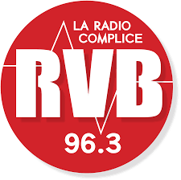
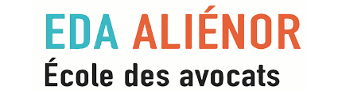
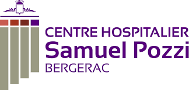
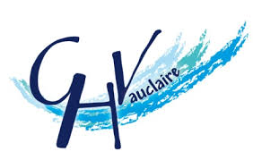
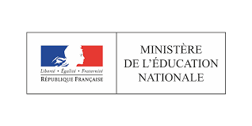
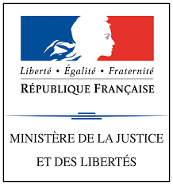
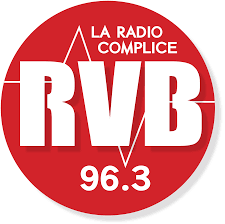
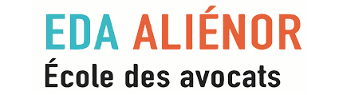